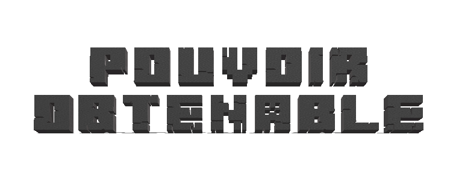
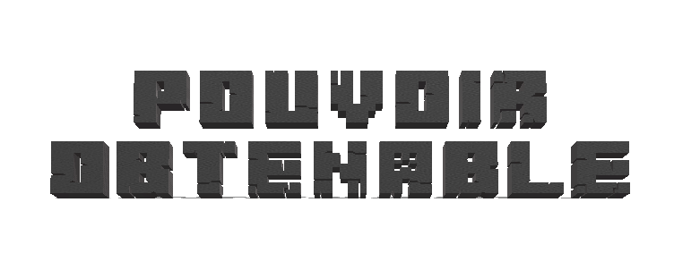

Modification corporelles : La personne utilisant le mod Chi se voit ajouter des particularités physiques hors normes. En effet, celle ci se voit octroyer de longues ailes lui permettant de voler librement.
Jutsu : Lorsqu'une personne arrive a conclure un pacte avec Joõbachi, celui ci se retrouve en capacité de lancer de nouveaux jutsu très particuliers. Voici la liste de ceux ci :
Invocation : Jutsu permettant d'invoquer Joõbachi
Marée de miel : La personne utilise le chakra de Joõbachi afin de concentrer une énorme quantité de miel depuis sa bouche pour ensuite le cracher autour de lui pour submerger l'ennemi.
Prison de miel : La personne utilise le chakra de Joõbachi afin de concentrer une quantité de miel depuis sa bouche pour ensuite le cracher devant lui pour emprisonner l'ennemi.
Cable de miel : La personne utilise le chakra de Joõbachi afin de concentrer une quantité de miel sous forme de fil dans ses paumes pour ensuite les utiliser pour immbolibiser l'ennemi.